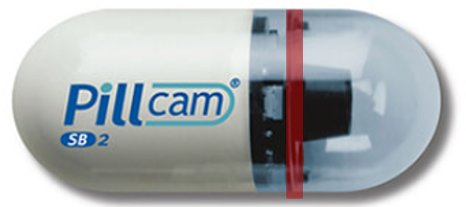
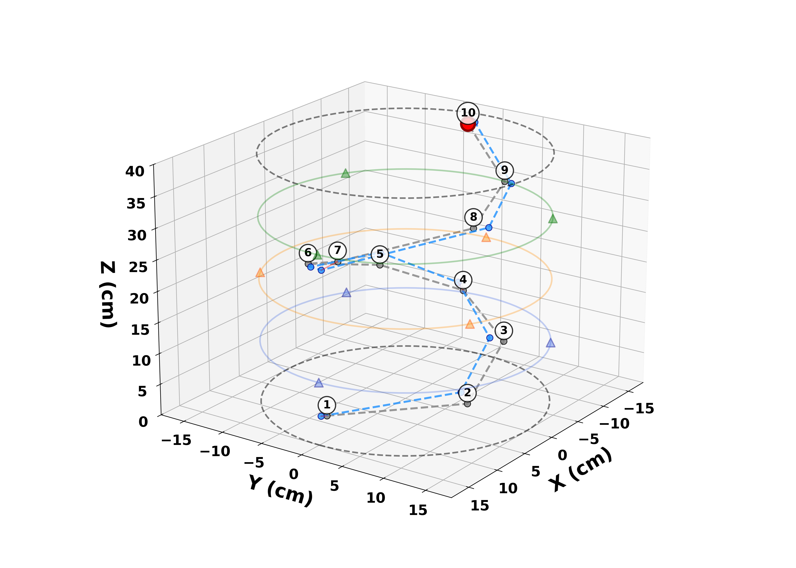

Motivation: Why Localize a Wireless Capsule?
The Clinical Need
- Wireless capsule endoscopy (WCE) enables non-invasive visualization of the GI tract
- Detected abnormalities must be mapped to anatomical regions for clinical decision-making
- RF-based localization is attractive: non-ionizing, no line-of-sight required, wearable-compatible
The Challenge
- Multipath propagation through heterogeneous tissue
- Patient-specific anatomical variations in body size and composition
- Orientation-dependent radiation patterns from capsule antenna
- Anchor calibration errors from body-worn sensor placement


Our Contribution
An anchor-aware conditional flow matching framework that learns a geometry-constrained transport process for single-shot, uncertainty-aware 3D localization from RF measurements alone.
Our Approach: Conditional Flow Matching

Particles flow from prior (scattered) to posterior (concentrated) — spread encodes uncertainty

3D trajectory through phantom — ground truth (gray) vs predicted (blue)
Velocity field, conditioned on RF \(\mathbf{y}\)
\[\frac{d\mathbf{x}_t}{dt} = f_\theta(\mathbf{x}_t, t, \mathbf{y}), \quad t \in [0,1]\]
Training — straight-line bridge from prior to target:
\[\mathbf{x}_t = (1{-}t)\mathbf{x}_0 + t\mathbf{x}^\star, \quad \mathbf{v}^\star = \mathbf{x}^\star - \mathbf{x}_0\]
Heteroscedastic loss — learns per-axis variance:
\[\mathcal{L} = \tfrac{1}{2}\!\sum_{a} w_a\!\left( \tfrac{(v_a^\star - \mu_{\theta,a})^2}{\sigma_{\theta,a}^2} + \log \sigma_{\theta,a}^2 \right)\]
Inference — Euler–Maruyama on \(N\) particles; mean → position, covariance → uncertainty:
\[\mathbf{x}_{t+\Delta t} = \mathbf{x}_t + \Delta t\,\mu_\theta + \sqrt{\Delta t}\,\sigma_\theta\,\mathbf{z}\]
Notation
Antenna Designs and S-Parameters

- (a) Printed slot antenna — compact, wideband MICS + ISM, body-mounted [Qamar 2026]
- Designed for on-body placement with minimal patient discomfort
- (b) Offset dipole — biocompatible PVC encapsulation, deep-implant propagation [Qamar 2024]
- Dual-camera integrated MIMO design (11 mm × 27 mm)
- (c) |S11| < -20 dB at 0.4 GHz, |S22| MICS band matching, |S21| in-body transmission coupling
- Full-wave EM simulation in CST at 403 MHz MICS band
Anchor-Aware Encoder Architecture

Results: Overall Performance

Best Validation (Epoch 149)
| Error Metrics | |
|---|---|
| Mean error | 1.94 cm (± 0.77) |
| Median | 1.88 cm |
| 95th percentile | 3.29 cm |
| Success Rates | |
| ≤ 1 cm | 17.5% |
| ≤ 2 cm | 71.6% |
| ≤ 3 cm | 97.0% |
| ≤ 5 cm | 100% |
| Per-Axis MAE (cm) | |
| x / y / z | 0.79 / 0.80 / 0.86 |
Key Observations
- Near-isotropic: per-axis errors within 0.07 cm of each other
- 100% within 5 cm clinical threshold, 97% within 3 cm
- Median under 2 cm — sub-cm per-axis accuracy
- UWB methods report 1-4 mm but need specialized hardware; RSSI-only achieves 5-10 cm
- Our CFM: sub-2 cm with built-in uncertainty using standard RF features